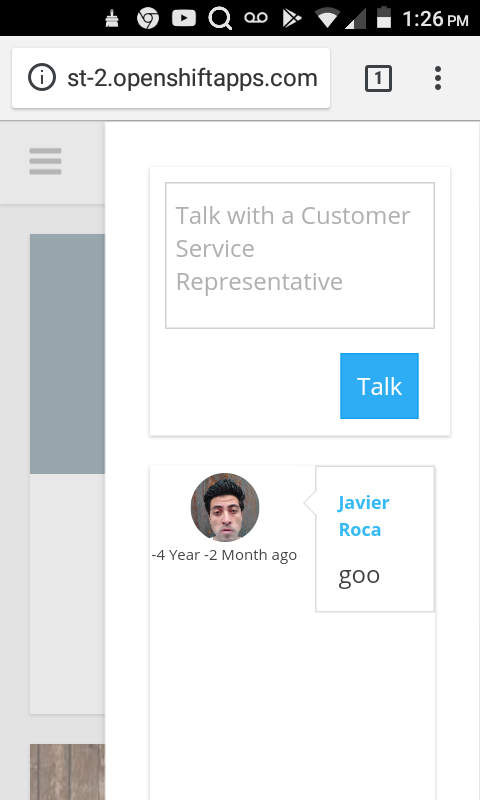

La Ultima Frontera de los BPO y Contact Centers un Producto Digital
se trata de un Sistema Web que atiende a los Clientes de las empresas un B2B Business to Business SaaS Software as a Service, un Software como Servicio Equipo: Javier Alfonso Roca Arellano 10 años haciendo Sistemas de Inteligencia de Negocios para los Contact Centers Curriculum: https://tinyurl.com/ybhjlvuw
Problema: los Contact Centers Fisicos tienen Limitantes como Max Capacity, Seat Turn y Seat Delta
Ventajas: en un Contact Center Digital las Limitantes son Reads/Writes en un Disco Duro, Escala en Otras Dimensiones
Solucion: El Sistema esta hecho con Ingenieria de Clase Mundial Node.js, ExtJS de Sencha Soporta Millones de Conexiones
Producto: 
Modelo de Negocio: el ya probado modelo de los contact centers, se proyecta 100,000 llamadas a $US1.00 total $100,000 por mes
Inversion: el software se esta construyendo sin ningun capital de trabajo se a recibido 0 cero capital de inversion
Inversion: se necesita el pago de planilla de mi persona Q8,000 ocho mil mensuales por 1 año (tiempo de construccion) total: Q96,000.00
Costos: luego de la construccion del Sistma el costo fijo del servidor $US 50.00 mensuales a RedHat OpenSHift
Costos: otro costo fijo es el pago de comision por transaccion por el pago de Planilla en el Sistema a Visa o el Merchant
Inversionistas Interesados: javierroca340@googlemail.com